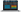

Incorta: Dark Mode
Led the creation of Dark Mode for the Incorta app

One of Incorta's most engaged customers had a valid request for dark mode. Compared to the other roadmap items we had, this feature was considered a small effort for a huge return. Since it did not rely on the server team, it was something that could be turned over quickly in the next release.
I was the only UX designer in a team of two front-end engineers and one PM for this feature. This role allowed me to tap into my visual design skills and knowledge of web accessibility.
The customers that wanted this feature are business users, the ones who produce the dashboards and insights to present to the execs. We learned that this particular customer holds many training sessions in their conference room, where the walls are painted a charcoal color. We've received feedback that anytime they present decks and visualizations that are white, the audience gets disoriented due to the walls.
The users said it would be nice to have the option to switch to a dark mode, because for some schema developers, they're spending hours looking through the app and would prefer to look at a darker interface.
The Dark Mode UI was going to be a lab feature where we test in our Incorta Labs before rolling it out the public. We had planned for it to span across a few releases as we add more features that had to be thought out in Dark Mode.
Things that I had to keep in mind while creating for Dark Mode:
Before jumping into designs, I spent a few hours researching best practices in dark mode and looked for examples of great implementation, on both desktop and mobile.
Using existing wireframes, I explored variations of dark colors to accommodate all the components. The most effective way was to invert the colors. I inspected the Incorta App and made live edits to see if things were readable.

I tried testing out the colors and styles with every interaction and user case possible.

The scrim had to be the perfect opacity and color to show the layer underneath.

The front-end team implemented Dark Mode in a test build. As we were testing out the interface, we came across some overlooked scenarios where the proposed colors were difficult to read. For example, the usual Incorta blue hyperlink was hard to make out on a grey background. There were only a few of these types of instances.

The grey was changed to darker shade in order to show the hyperlink.
The Dark Mode was then updated to address the use of blues on grey backgrounds. The feature was made available internally first, and made as a feature bit in the upcoming release.

The current dark mode styles.

Figure out a Dark Mode palette that will work for all components in the Incorta app.
Researched current trends in various dark mode trends in different apps.
Explored and tested different colors in each use case of the app.
Developed and reviewed in test build.
Revisited some components to change.
Dark Mode was with positive feedback from customer and internal users.
The customer who requested the feature was delighted with the app. Surprisingly, many of the internal users of Incorta enjoyed the feature and ended up using that mode as they said it helped their eyes adjust to the lists, tables, and data visualizations. Other customers began using the feature as well. Now that the feature is successful and has a decent amount of users, we can then enhance it for our upcoming releases if needed.